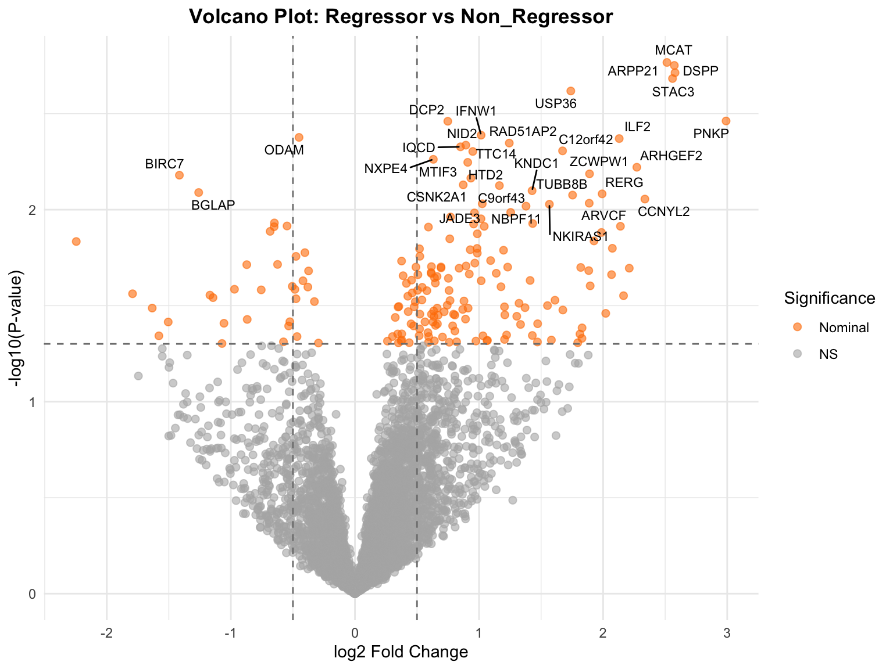

Last updated: 2026-07-09
Checks: 6 1
Knit directory: RESOLVE_SerumProteomics/
This reproducible R Markdown analysis was created with workflowr (version 1.7.2). The Checks tab describes the reproducibility checks that were applied when the results were created. The Past versions tab lists the development history.
The R Markdown is untracked by Git. To know which version of the R
Markdown file created these results, you’ll want to first commit it to
the Git repo. If you’re still working on the analysis, you can ignore
this warning. When you’re finished, you can run
wflow_publish to commit the R Markdown file and build the
HTML.
Great job! The global environment was empty. Objects defined in the global environment can affect the analysis in your R Markdown file in unknown ways. For reproduciblity it’s best to always run the code in an empty environment.
The command set.seed(20250204) was run prior to running
the code in the R Markdown file. Setting a seed ensures that any results
that rely on randomness, e.g. subsampling or permutations, are
reproducible.
Great job! Recording the operating system, R version, and package versions is critical for reproducibility.
Nice! There were no cached chunks for this analysis, so you can be confident that you successfully produced the results during this run.
Great job! Using relative paths to the files within your workflowr project makes it easier to run your code on other machines.
Great! You are using Git for version control. Tracking code development and connecting the code version to the results is critical for reproducibility.
The results in this page were generated with repository version 0310e62. See the Past versions tab to see a history of the changes made to the R Markdown and HTML files.
Note that you need to be careful to ensure that all relevant files for
the analysis have been committed to Git prior to generating the results
(you can use wflow_publish or
wflow_git_commit). workflowr only checks the R Markdown
file, but you know if there are other scripts or data files that it
depends on. Below is the status of the Git repository when the results
were generated:
Ignored files:
Ignored: .DS_Store
Ignored: .Rhistory
Ignored: .Rproj.user/
Ignored: Screenshot-2024-08-22-at-11.31.50_files/
Ignored: analysis/.DS_Store
Ignored: data/.DS_Store
Ignored: output/.DS_Store
Ignored: output/3.1_veSSc_Athritis /
Ignored: output/3.2_veSScarthritis_vs_SScarthritis /
Ignored: output/3.2_veSScarthritis_vs_SScarthritis/
Ignored: output/Analysis_Cosimo/
Ignored: output/SSc Proteomics: Pathway Enrichment Analysis/
Untracked files:
Untracked: MRSS_delta_correlations.png
Untracked: analysis/OLD/
Untracked: analysis/PreSSc_Synovitis.Rmd
Untracked: analysis/RESOLVE_SSc_Olink_Analysis_Clean-2.Rmd
Untracked: analysis/RESOLVE_SSc_Pathway_Enrichment-2.Rmd
Untracked: analysis/SSc_ILD_Onset_Analysis_Clean.Rmd
Untracked: analysis/SSc_ILD_Onset_Pathway_Enrichment.Rmd
Untracked: analysis/output/
Untracked: code/11102024_PreliminaryLook_Preprocessing.Rmd
Untracked: code/14102024_MetaData.csv
Untracked: code/Final_FinalList_ArthritisControls_2024.08.15.xlsx
Untracked: data/ASTRID_ILDonset_PROTEOMIC_CB3groups.xlsx
Untracked: data/ASTRID_ILDonset_PROTEOMIC_COSIMO.xlsx
Untracked: data/Metadata_veSSC.xlsx
Untracked: data/Metadata_veSSC_vs_SSc_arthritis_final.xlsx
Untracked: data/P2024-199-OLI_80_NPX_2024-10-10.parquet
Untracked: data/PEA/
Untracked: data/PRECISE_Pietro.xlsx
Untracked: data/metadata.xlsx
Untracked: output/ILD_Onset_Analysis/
Untracked: output/Pietro_InterferonScore/
Untracked: output/PreSScArthritis_vs_SScArthritis/
Untracked: output/PreSSc_Synovitis/
Untracked: output/RESOLVE/
Untracked: output/RESOLVE_clean/
Untracked: output/SSc_Olink_Analysis_Clean-2/
Untracked: output/SSc_veSSc_vs_SSc_Arthritis_Analysis_Clean/
Untracked: output/UpdatedAnalysisPipelineCosimo/
Untracked: output/arthritis_analysis/
Untracked: site_libs/
Unstaged changes:
Modified: .Rprofile
Modified: .gitattributes
Modified: .gitignore
Modified: README.md
Modified: RESOLVE_SerumProteomics.Rproj
Modified: _workflowr.yml
Deleted: analysis/PreSSc/PreSScArthritis_vs_SScArthritis.Rmd
Modified: analysis/_site.yml
Modified: analysis/about.Rmd
Modified: analysis/license.Rmd
Modified: code/README.md
Modified: data/README.md
Modified: output/README.md
Note that any generated files, e.g. HTML, png, CSS, etc., are not included in this status report because it is ok for generated content to have uncommitted changes.
There are no past versions. Publish this analysis with
wflow_publish() to start tracking its development.
This analysis identifies serum proteins associated with skin fibrosis regression in SSc patients.
Four analytical approaches:
| Analysis | Comparison | Description |
|---|---|---|
| A | Binary: Regressor vs Non_Regressor | Includes Stable patients with Non_Regressors |
| B | Continuous: All patients | Correlation with ΔMRSS (degree of skin change) |
| C | Binary: Regressor vs Progressor | Excludes Stable — compares extremes only |
| D | Continuous: Regressor vs Progressor | Correlation with ΔMRSS, excludes Stable |
Sensitivity analysis restricts to years with both groups represented (2014, 2019-2021).
Healthy controls are included for visualization/reference but not in statistical models.
# Data I/O
library(arrow) # Read parquet files (Olink output format)
library(openxlsx) # Read Excel metadata
# Data manipulation
library(dplyr) # Data wrangling
library(tidyr) # Reshaping data (long <-> wide)
# Statistical analysis
library(limma) # Linear models for differential expression
# Designed for microarray/proteomics; handles small samples well
# Uses empirical Bayes to borrow information across proteins
# Visualization
library(ggplot2) # Plotting
library(ggpubr) # Add statistical comparisons to plots
library(cowplot) # Combine multiple plots
library(ggrepel) # Non-overlapping labels on volcano plots# =============================================================================
# PURPOSE: Load raw data files
#
# Two data sources:
# 1. NPX data: Olink's Normalized Protein eXpression values (log2 scale)
# - Already normalized across plates by Olink
# - Long format: one row per protein-sample combination
#
# 2. Metadata: Clinical data including mRSS scores and patient classification
# =============================================================================
# UPDATE THESE PATHS to your local files
npx_data <- read_parquet(here::here("data", "P2024-199-OLI_80_NPX_2024-10-10.parquet"))
metadata <- read.xlsx(here::here("data", "metadata.xlsx"))
cat("NPX data:", nrow(npx_data), "rows\n")NPX data: 516800 rowscat("Metadata:", nrow(metadata), "samples\n")Metadata: 45 samples# =============================================================================
# PURPOSE: Merge proteomics data with clinical metadata
#
# WHY: NPX data contains only sample IDs and protein values.
# We need to link these to clinical outcomes (mRSS change, classification)
# to test which proteins associate with skin regression.
# =============================================================================
# Create matching ID columns for merge
# (NPX uses "SampleID", metadata uses "Barcode" — same values, different names)
metadata$patient <- metadata$Barcode
npx_data$patient <- npx_data$SampleID
# Create binary grouping variable: Regressor vs Non_Regressor
# WHY: Stable patients didn't improve but also didn't worsen.
# For the primary analysis, we group them with Progressors as "Non_Regressor"
# to answer: "What distinguishes patients who improved from those who didn't?"
metadata$PatientGroup <- ifelse(
metadata$Classification %in% c("Progressor", "Stable"),
"Non_Regressor",
metadata$Classification
)
# Merge NPX with metadata (left join: keep all NPX rows)
merged <- merge(npx_data, metadata, by = "patient", all.x = TRUE)
merged <- tibble::as_tibble(merged)
# Keep only samples with clinical outcome data OR plate controls
# WHY: Plate controls (CTRL samples) are needed for QC but have no clinical data
# Samples without MRSS_Delta cannot be used in the analysis
filtered_df <- merged %>%
filter(!is.na(MRSS_Delta) | grepl("CTRL", SampleID))
cat("Merged data:", nrow(merged), "rows\n")Merged data: 516800 rowscat("Filtered data:", nrow(filtered_df), "rows\n")Filtered data: 315520 rows# =============================================================================
# PURPOSE: Prepare clinical metadata for statistical modeling
#
# KEY STEPS:
# 1. Exclude patients missing from the expression matrix
# 2. Calculate the continuous outcome variable (signed MRSS change)
# 3. Convert categorical variables to factors with proper reference levels
# =============================================================================
# Exclude patients 180 and 216
# WHY: These patients are in metadata but missing from NPX data (no proteomics)
filtered_metadata <- metadata %>%
filter(!EUSTAR_Number %in% c(180, 216)) %>%
filter(!is.na(MRSS_Delta)) # Must have clinical outcome
# Calculate SIGNED mRSS change: Baseline minus Follow-up
# WHY: MRSS_Delta in metadata is absolute value (unsigned)
# We need direction: positive = improvement, negative = worsening
# This enables the continuous correlation analysis
filtered_metadata$mRSS_FUP <- as.numeric(filtered_metadata$mRSS_FUP)
filtered_metadata$MRSS_signed <- filtered_metadata$mRSS_BL - filtered_metadata$mRSS_FUP
# Convert Visit_Year to factor
# WHY: Year of sample collection may introduce batch effects
# (different reagent lots, operators, storage times)
# We'll include it as a covariate to adjust for these effects
filtered_metadata$Visit_Year <- as.factor(filtered_metadata$Visit_Year)
# Set reference level for PatientGroup
# WHY: In limma, the first factor level is the reference (denominator in contrast)
# Setting "Non_Regressor" first means positive logFC = higher in Regressor
filtered_metadata$PatientGroup <- factor(filtered_metadata$PatientGroup,
levels = c("Non_Regressor", "Regressor"))
# Extract patient NPX data only (exclude plate controls)
# WHY: Controls are useful for QC but shouldn't be in statistical models
patient_npx <- filtered_df %>%
filter(!grepl("CTRL", SampleID)) %>%
filter(EUSTAR_Number %in% filtered_metadata$EUSTAR_Number)
cat("Patients:", nrow(filtered_metadata), "\n")Patients: 43 cat("Group distribution:\n")Group distribution:print(table(filtered_metadata$PatientGroup))
Non_Regressor Regressor
18 25 print(table(filtered_metadata$Classification))
Progressor Regressor Stable
13 25 5 # =============================================================================
# PURPOSE: Reshape NPX data from long to wide format for limma
#
# WHY: Olink outputs data in "long" format (one row per protein-sample)
# limma requires a matrix: rows = proteins, columns = samples
# This is the standard format for differential expression analysis
# =============================================================================
# Extract the three columns we need
matrix_df <- as.data.frame(cbind(patient_npx$EUSTAR_Number, patient_npx$NPX, patient_npx$OlinkID))
colnames(matrix_df) <- c("EUSTAR_Number", "Value", "Protein")
# Reshape: long → wide (proteins as rows, patients as columns)
wide_data <- tidyr::pivot_wider(matrix_df, names_from = EUSTAR_Number, values_from = Value)
wide_data <- as.data.frame(wide_data)
# Set protein IDs as rownames (limma convention)
rownames(wide_data) <- wide_data$Protein
data <- wide_data[, !(colnames(wide_data) %in% c("NA", "Protein")), drop = FALSE]
# Convert to numeric matrix
# WHY: pivot_wider creates character columns; limma needs numeric
data_matrix <- as.matrix(data)
data_matrix2 <- apply(data_matrix, 2, as.numeric)
rownames(data_matrix2) <- rownames(data_matrix)
# Create gene lookup table (OlinkID → gene symbol)
# WHY: Results are easier to interpret with gene names than Olink IDs
gene_lookup <- patient_npx %>% distinct(OlinkID, Assay)
cat("Expression matrix:", nrow(data_matrix2), "proteins x", ncol(data_matrix2), "patients\n")Expression matrix: 5440 proteins x 43 patients# =============================================================================
# PURPOSE: Ensure metadata rows match expression matrix columns
#
# WHY THIS IS CRITICAL:
# limma assumes row i of the design matrix describes column i of the data matrix.
# If they're misaligned, you're testing the wrong samples against each other!
#
# This is the #1 source of errors in differential expression analysis.
# Always verify alignment before running any statistical model.
# =============================================================================
# Show the mismatch (expected — data come from different sources)
cat("BEFORE alignment:\n")BEFORE alignment:cat("Matrix columns (first 5):", head(colnames(data_matrix2), 5), "\n")Matrix columns (first 5): 65 456 461 289 517 cat("Metadata EUSTAR (first 5):", head(as.character(filtered_metadata$EUSTAR_Number), 5), "\n")Metadata EUSTAR (first 5): 16 27 62 65 81 cat("Aligned:", all(colnames(data_matrix2) == as.character(filtered_metadata$EUSTAR_Number)), "\n\n")Aligned: FALSE # FIX: Reorder metadata rows to match matrix column order
# match() returns the position in metadata that corresponds to each matrix column
filtered_metadata <- filtered_metadata[match(colnames(data_matrix2),
as.character(filtered_metadata$EUSTAR_Number)), ]
# Verify alignment with stopifnot() — script will halt if alignment fails
stopifnot(all(colnames(data_matrix2) == as.character(filtered_metadata$EUSTAR_Number)))
cat("✓ Alignment verified\n")✓ Alignment verifiedQuestion: Which proteins differ between Regressors and Non_Regressors?
# =============================================================================
# PURPOSE: Test for differential protein abundance between groups
#
# WHY LIMMA:
# - Designed for high-dimensional data with small sample sizes
# - Uses empirical Bayes to "borrow strength" across proteins
# - More stable variance estimates than t-tests when n is small
# - Handles covariates (Visit_Year) naturally
#
# MODEL: ~0 + PatientGroup + Visit_Year
# - "~0 + PatientGroup" estimates a mean for each group (no intercept)
# - "+ Visit_Year" adjusts for batch effects from sample collection year
# =============================================================================
# Build design matrix
# WHY ~0 (no intercept): Allows direct group mean estimation
# This makes contrast specification clearer: GroupA - GroupB
design_binary <- model.matrix(~0 + PatientGroup + Visit_Year, data = filtered_metadata)
# Fit linear model to each protein
# For each protein: Expression ~ β1*Regressor + β2*NonRegressor + β3*Year2019 + ...
fit_binary <- lmFit(data_matrix2, design_binary)
# Define contrast: Regressor minus Non_Regressor
# Positive logFC = higher in Regressor, Negative = higher in Non_Regressor
contrast.matrix <- makeContrasts(
Regressor_vs_NonRegressor = PatientGroupRegressor - PatientGroupNon_Regressor,
levels = design_binary
)
# Apply contrast and compute moderated statistics
fit_binary2 <- contrasts.fit(fit_binary, contrast.matrix)
# Empirical Bayes moderation
# WHY: Shrinks protein-specific variances toward a common value
# This stabilizes p-values when sample sizes are small
fit_binary2 <- eBayes(fit_binary2)
# Extract results for all proteins
# number = Inf: return all proteins, not just top hits
# adjust.method = "BH": Benjamini-Hochberg FDR correction
binary_results <- topTable(fit_binary2, coef = 1, number = Inf, adjust.method = "BH")
# Add gene symbols for interpretability
binary_results$OlinkID <- rownames(binary_results)
binary_results <- binary_results %>% left_join(gene_lookup, by = "OlinkID")
# Summary statistics
cat("=== BINARY COMPARISON: Regressor vs Non_Regressor ===\n")=== BINARY COMPARISON: Regressor vs Non_Regressor ===cat("FDR < 0.05:", sum(binary_results$adj.P.Val < 0.05), "\n")FDR < 0.05: 0 cat("FDR < 0.1:", sum(binary_results$adj.P.Val < 0.1), "\n")FDR < 0.1: 0 cat("FDR < 0.2:", sum(binary_results$adj.P.Val < 0.2), "\n")FDR < 0.2: 0 cat("Nominal p < 0.05:", sum(binary_results$P.Value < 0.05), "\n")Nominal p < 0.05: 192 # Display top hits
# logFC: log2 fold change (Regressor vs Non_Regressor)
# AveExpr: average expression across all samples (higher = more abundant)
# P.Value: nominal p-value from moderated t-test
# adj.P.Val: FDR-adjusted p-value (Benjamini-Hochberg)
binary_results %>%
select(Assay, logFC, AveExpr, P.Value, adj.P.Val) %>%
head(30) Assay logFC AveExpr P.Value adj.P.Val
1 ARPP21 2.5142548 0.50323392 0.001710823 0.9995502
2 MCAT 2.5738053 -1.14568725 0.001772708 0.9995502
3 DSPP 2.5795496 0.29353491 0.001934324 0.9995502
4 STAC3 2.5592000 -1.19936005 0.002074216 0.9995502
5 USP36 1.7394998 0.88404727 0.002408484 0.9995502
6 PNKP 2.9908606 -0.27458329 0.003451472 0.9995502
7 DCP2 0.7481162 -0.12754088 0.003463423 0.9995502
8 IFNW1 1.0166886 -0.59652682 0.004091722 0.9995502
9 ODAM -0.4507711 0.32203013 0.004202143 0.9995502
10 ILF2 2.1295443 0.47763546 0.004262287 0.9995502
11 RAD51AP2 1.2436872 -0.47796997 0.004498221 0.9995502
12 NID2 0.8934622 3.38004429 0.004611750 0.9995502
13 IQCD 0.8503407 0.04757159 0.004704936 0.9995502
14 C12orf42 1.6730968 -0.79655267 0.004938106 0.9995502
15 TTC14 0.9493625 0.20192850 0.004974546 0.9995502
16 NXPE4 0.6315416 0.01811850 0.005467195 0.9995502
17 MTIF3 0.9088997 0.11931677 0.005668959 0.9995502
18 ARHGEF2 2.2716108 2.92820545 0.006011332 0.9995502
19 ZCWPW1 1.8903461 0.15277543 0.006505826 0.9995502
20 BIRC7 -1.4148938 0.66479898 0.006613123 0.9995502
21 HTD2 0.9339891 1.59177970 0.006850013 0.9995502
22 CSNK2A1 0.8724261 1.01153841 0.007422930 0.9995502
23 C9orf43 1.1640221 -2.02372712 0.007489453 0.9995502
24 KNDC1 1.4274687 -0.86593985 0.007964304 0.9995502
25 BGLAP -1.2594333 -0.30120975 0.008139674 0.9995502
26 RERG 1.9919166 -0.35347114 0.008271427 0.9995502
27 TUBB8B 1.7538111 -0.37246855 0.008395447 0.9995502
28 CCNYL2 2.3366208 0.12706987 0.008804650 0.9995502
29 ARVCF 1.8878490 -0.14607991 0.009253685 0.9995502
30 JADE3 1.0258600 0.37320886 0.009314472 0.9995502Question: Which proteins predict degree of skin improvement?
# =============================================================================
# PURPOSE: Test correlation between protein levels and degree of skin change
#
# WHY CONTINUOUS INSTEAD OF BINARY:
# - Binary (Regressor vs Non_Regressor) treats all improvers equally
# - Continuous analysis uses the actual ΔMRSS value
# - A patient who improved by 15 points contributes more signal than one who improved by 5
# - This can be MORE POWERFUL when the true relationship is dose-dependent
#
# MODEL: ~MRSS_signed + Visit_Year
# - MRSS_signed: continuous predictor (BL - FUP; positive = improvement)
# - Visit_Year: adjustment for batch effects
#
# INTERPRETATION OF logFC:
# - logFC = change in NPX per 1-unit increase in MRSS_signed
# - Positive logFC: higher protein → more improvement
# - Negative logFC: higher protein → more worsening
# =============================================================================
# Build design matrix with continuous predictor
# Note: ~MRSS_signed (with intercept) vs ~0+MRSS_signed (without)
# With intercept is standard for continuous regression
design_continuous <- model.matrix(~MRSS_signed + Visit_Year, data = filtered_metadata)
# Fit linear model
fit_continuous <- lmFit(data_matrix2, design_continuous)
fit_continuous <- eBayes(fit_continuous)
# Extract results for the MRSS_signed coefficient specifically
# coef = "MRSS_signed" extracts just the slope, not the intercept or year effects
continuous_results <- topTable(fit_continuous, coef = "MRSS_signed", number = Inf, adjust.method = "BH")
continuous_results$OlinkID <- rownames(continuous_results)
continuous_results <- continuous_results %>% left_join(gene_lookup, by = "OlinkID")
# Summary
cat("=== CONTINUOUS ANALYSIS: Correlation with ΔMRSS ===\n")=== CONTINUOUS ANALYSIS: Correlation with ΔMRSS ===cat("MRSS_signed range:", range(filtered_metadata$MRSS_signed), "\n")MRSS_signed range: -17 27 cat("FDR < 0.05:", sum(continuous_results$adj.P.Val < 0.05), "\n")FDR < 0.05: 0 cat("FDR < 0.1:", sum(continuous_results$adj.P.Val < 0.1), "\n")FDR < 0.1: 0 cat("FDR < 0.2:", sum(continuous_results$adj.P.Val < 0.2), "\n")FDR < 0.2: 0 cat("FDR < 0.3:", sum(continuous_results$adj.P.Val < 0.3), "\n")FDR < 0.3: 165 cat("Nominal p < 0.05:", sum(continuous_results$P.Value < 0.05), "\n")Nominal p < 0.05: 696 # Display top hits
# logFC here = NPX change per 1-unit ΔMRSS (not per group like binary analysis)
continuous_results %>%
select(Assay, logFC, AveExpr, P.Value, adj.P.Val) %>%
head(30) Assay logFC AveExpr P.Value adj.P.Val
1 KHDRBS3 0.05953812 0.8727326 0.0001242293 0.2665051
2 SERPINE2 0.05831039 5.3218095 0.0001725644 0.2665051
3 STAC3 0.16724979 -1.1993600 0.0001927960 0.2665051
4 HTD2 0.06780129 1.5917797 0.0002267458 0.2665051
5 TIMP1 0.03393287 1.5596794 0.0002449495 0.2665051
6 PNKP 0.19047737 -0.2745833 0.0006254699 0.2905828
7 NID2 0.05823273 3.3800443 0.0006663982 0.2905828
8 GOLGA1 0.06203184 0.8188005 0.0006804140 0.2905828
9 CHI3L1 0.07288000 0.1874315 0.0006951314 0.2905828
10 MMP1 0.06793141 5.4497198 0.0007807159 0.2905828
11 PXN 0.05457183 1.7771234 0.0008594189 0.2905828
12 CLEC1B 0.04813909 4.1131565 0.0009048135 0.2905828
13 EIF2AK2 0.07457533 2.4124702 0.0009654036 0.2905828
14 NID1 0.03239028 1.3355276 0.0011213567 0.2905828
15 MTIF3 0.05815280 0.1193168 0.0011668671 0.2905828
16 YARS1 0.06998997 1.5015217 0.0012066712 0.2905828
17 MCAT 0.14737841 -1.1456872 0.0012369011 0.2905828
18 TGFB1 0.02665385 1.9042522 0.0012993481 0.2905828
19 ZNF330 0.10187231 0.3843254 0.0013346552 0.2905828
20 APP 0.03103425 2.1174937 0.0013899721 0.2905828
21 SERPINE1 0.03814404 2.8888022 0.0014547005 0.2905828
22 DTX3L 0.05743819 1.1331288 0.0014897914 0.2905828
23 TUBB8B 0.11411567 -0.3724686 0.0016546752 0.2905828
24 UFD1 0.05284709 1.7920387 0.0017341201 0.2905828
25 TSC1 0.08570346 -0.3606930 0.0018114650 0.2905828
26 CTSA 0.03158260 2.4868963 0.0018287434 0.2905828
27 USP36 0.09907546 0.8840473 0.0018330315 0.2905828
28 SCARF1 0.02938117 1.9991878 0.0018676777 0.2905828
29 RILPL1 0.04573967 1.2647741 0.0018707481 0.2905828
30 TMA16 0.04971966 0.4613952 0.0019460333 0.2905828# =============================================================================
# PURPOSE: Convert logFC to biologically meaningful effect sizes
#
# WHY: logFC from continuous analysis is "per 1-unit MRSS change"
# To understand total effect, multiply by the range of MRSS changes observed
#
# EXAMPLE: If logFC = 0.02 and MRSS range is -10 to +20 (span = 30)
# Total effect = 0.02 × 30 = 0.6 NPX units
# Fold change = 2^0.6 ≈ 1.5× (50% difference across the range)
# =============================================================================
mrss_span <- diff(range(filtered_metadata$MRSS_signed))
continuous_results %>%
filter(P.Value < 0.01) %>%
mutate(
# Total NPX change across the full range of MRSS values
total_effect_NPX = logFC * mrss_span,
# Convert to fold change (NPX is log2 scale)
fold_change = round(2^total_effect_NPX, 2)
) %>%
select(Assay, logFC, total_effect_NPX, fold_change, P.Value, adj.P.Val) %>%
head(20) Assay logFC total_effect_NPX fold_change P.Value adj.P.Val
1 KHDRBS3 0.05953812 2.619677 6.15 0.0001242293 0.2665051
2 SERPINE2 0.05831039 2.565657 5.92 0.0001725644 0.2665051
3 STAC3 0.16724979 7.358991 164.16 0.0001927960 0.2665051
4 HTD2 0.06780129 2.983257 7.91 0.0002267458 0.2665051
5 TIMP1 0.03393287 1.493046 2.81 0.0002449495 0.2665051
6 PNKP 0.19047737 8.381004 333.38 0.0006254699 0.2905828
7 NID2 0.05823273 2.562240 5.91 0.0006663982 0.2905828
8 GOLGA1 0.06203184 2.729401 6.63 0.0006804140 0.2905828
9 CHI3L1 0.07288000 3.206720 9.23 0.0006951314 0.2905828
10 MMP1 0.06793141 2.988982 7.94 0.0007807159 0.2905828
11 PXN 0.05457183 2.401160 5.28 0.0008594189 0.2905828
12 CLEC1B 0.04813909 2.118120 4.34 0.0009048135 0.2905828
13 EIF2AK2 0.07457533 3.281314 9.72 0.0009654036 0.2905828
14 NID1 0.03239028 1.425172 2.69 0.0011213567 0.2905828
15 MTIF3 0.05815280 2.558723 5.89 0.0011668671 0.2905828
16 YARS1 0.06998997 3.079559 8.45 0.0012066712 0.2905828
17 MCAT 0.14737841 6.484650 89.55 0.0012369011 0.2905828
18 TGFB1 0.02665385 1.172769 2.25 0.0012993481 0.2905828
19 ZNF330 0.10187231 4.482382 22.35 0.0013346552 0.2905828
20 APP 0.03103425 1.365507 2.58 0.0013899721 0.2905828Excludes Stable patients — compares only the extremes.
# =============================================================================
# PURPOSE: Compare only Regressors vs Progressors (exclude Stable)
#
# WHY EXCLUDE STABLE:
# - Stable patients neither improved nor worsened significantly
# - They may represent a biologically distinct group OR measurement noise
# - Comparing "improvers vs worseners" directly maximizes contrast
# - This is a more stringent test: can we distinguish true opposites?
#
# TRADEOFF: Smaller sample size (lose Stable patients)
# vs cleaner biological distinction
# =============================================================================
# Subset to Regressor and Progressor only
meta_prog_reg <- filtered_metadata %>%
filter(Classification %in% c("Regressor", "Progressor")) %>%
# Set Progressor as reference level (positive logFC = higher in Regressor)
mutate(Classification = factor(Classification, levels = c("Progressor", "Regressor")))
cat("Regressor vs Progressor subset:\n")Regressor vs Progressor subset:print(table(meta_prog_reg$Classification))
Progressor Regressor
13 25 cat("Total n =", nrow(meta_prog_reg), "\n")Total n = 38 # Subset the expression matrix to match
keep_prog_reg <- as.character(meta_prog_reg$EUSTAR_Number)
data_prog_reg <- data_matrix2[, colnames(data_matrix2) %in% keep_prog_reg]
# CRITICAL: Re-align metadata to subsetted matrix
meta_prog_reg <- meta_prog_reg[match(colnames(data_prog_reg),
as.character(meta_prog_reg$EUSTAR_Number)), ]
stopifnot(all(colnames(data_prog_reg) == as.character(meta_prog_reg$EUSTAR_Number)))
cat("✓ Alignment verified\n")✓ Alignment verified# =============================================================================
# PURPOSE: Limma differential expression — Regressor vs Progressor
#
# Same approach as Analysis A, but on the subset without Stable patients
# =============================================================================
# Design matrix with Visit_Year adjustment
design_prog_reg <- model.matrix(~0 + Classification + Visit_Year, data = meta_prog_reg)
# Fit linear model
fit_prog_reg <- lmFit(data_prog_reg, design_prog_reg)
# Contrast: Regressor vs Progressor
contrast_prog_reg <- makeContrasts(
Regressor_vs_Progressor = ClassificationRegressor - ClassificationProgressor,
levels = design_prog_reg
)
fit_prog_reg2 <- contrasts.fit(fit_prog_reg, contrast_prog_reg)
fit_prog_reg2 <- eBayes(fit_prog_reg2)
# Extract results
binary_prog_reg_results <- topTable(fit_prog_reg2, coef = 1, number = Inf, adjust.method = "BH")
binary_prog_reg_results$OlinkID <- rownames(binary_prog_reg_results)
binary_prog_reg_results <- binary_prog_reg_results %>% left_join(gene_lookup, by = "OlinkID")
# Summary
cat("=== BINARY COMPARISON: Regressor vs Progressor ===\n")=== BINARY COMPARISON: Regressor vs Progressor ===cat("FDR < 0.05:", sum(binary_prog_reg_results$adj.P.Val < 0.05), "\n")FDR < 0.05: 0 cat("FDR < 0.1:", sum(binary_prog_reg_results$adj.P.Val < 0.1), "\n")FDR < 0.1: 0 cat("FDR < 0.2:", sum(binary_prog_reg_results$adj.P.Val < 0.2), "\n")FDR < 0.2: 0 cat("Nominal p < 0.05:", sum(binary_prog_reg_results$P.Value < 0.05), "\n")Nominal p < 0.05: 344 # Top hits
binary_prog_reg_results %>%
select(Assay, logFC, AveExpr, P.Value, adj.P.Val) %>%
head(30) Assay logFC AveExpr P.Value adj.P.Val
1 LDLRAP1 2.3497260 0.51804018 0.0002216286 0.5648645
2 MCAT 3.4088052 -1.15508851 0.0002506337 0.5648645
3 NXPE4 0.9872526 0.01436768 0.0003530472 0.5648645
4 PNKP 4.4895797 -0.22325916 0.0004153415 0.5648645
5 HTD2 1.5256332 1.64096724 0.0005225750 0.5685616
6 RGS12 2.0998731 3.00907546 0.0008222208 0.7285859
7 NCKIPSD 0.5212058 0.26040171 0.0010231128 0.7285859
8 STAU1 1.6103543 1.25260347 0.0010867665 0.7285859
9 CKMT1A_CKMT1B 1.4361346 -0.56149842 0.0021617746 0.7285859
10 ARHGAP10 0.9275004 0.17905846 0.0022069207 0.7285859
11 KIF1C 0.9148251 0.84941029 0.0022127675 0.7285859
12 CALB2 1.0657473 -0.40505543 0.0022660121 0.7285859
13 NID2 1.1909672 3.39504601 0.0023933758 0.7285859
14 SERPINE2 1.1154659 5.30678230 0.0024213163 0.7285859
15 STAC3 3.1104001 -1.07949473 0.0024968647 0.7285859
16 KHDRBS3 1.1198501 0.85789181 0.0025648119 0.7285859
17 ARPP21 2.9620381 0.72349000 0.0030826227 0.7285859
18 GIT1 0.8535833 1.86603455 0.0032656674 0.7285859
19 PDGFD 0.7561573 4.32192540 0.0034394479 0.7285859
20 CLEC1B 0.9758931 4.06956751 0.0035975982 0.7285859
21 FAM221A 0.9186039 1.50494702 0.0036565835 0.7285859
22 ARVCF 2.5369452 -0.17924179 0.0040668730 0.7285859
23 ANLN 3.1342959 -1.79206147 0.0042318953 0.7285859
24 CCL5 1.1369994 3.49063505 0.0043549784 0.7285859
25 PF4 0.9911048 4.37382334 0.0043996528 0.7285859
26 OPHN1 0.8898892 -3.77001162 0.0044660436 0.7285859
27 RAD51AP2 1.5824668 -0.42550191 0.0045119697 0.7285859
28 LDB3 1.2996260 1.58409919 0.0046542589 0.7285859
29 USP36 2.1161033 0.95482347 0.0046975730 0.7285859
30 CXCL1 0.7637774 2.26861187 0.0050567695 0.7285859Question: Among patients who definitively improved or worsened, which proteins correlate with degree of change?
# =============================================================================
# PURPOSE: Continuous correlation on the Regressor/Progressor subset
#
# WHY THIS ANALYSIS:
# - Combines the benefits of continuous (uses full ΔMRSS range) with
# the cleaner comparison (excludes ambiguous Stable patients)
# - Stable patients cluster around ΔMRSS = 0, potentially adding noise
# - Removing them may increase power to detect real correlations
#
# EXPECTED DIFFERENCE FROM ANALYSIS B:
# - Wider MRSS_signed range (no values near 0 from Stable patients)
# - Potentially stronger correlations if Stable were adding noise
# - Potentially weaker if sample size reduction hurts more than noise removal helps
# =============================================================================
# Design matrix with continuous predictor
design_cont_prog_reg <- model.matrix(~MRSS_signed + Visit_Year, data = meta_prog_reg)
# Fit and moderate
fit_cont_prog_reg <- lmFit(data_prog_reg, design_cont_prog_reg)
fit_cont_prog_reg <- eBayes(fit_cont_prog_reg)
# Extract results for MRSS_signed coefficient
continuous_prog_reg_results <- topTable(fit_cont_prog_reg, coef = "MRSS_signed", number = Inf, adjust.method = "BH")
continuous_prog_reg_results$OlinkID <- rownames(continuous_prog_reg_results)
continuous_prog_reg_results <- continuous_prog_reg_results %>% left_join(gene_lookup, by = "OlinkID")
# Summary
cat("=== CONTINUOUS ANALYSIS: Regressor vs Progressor Only ===\n")=== CONTINUOUS ANALYSIS: Regressor vs Progressor Only ===cat("MRSS_signed range:", range(meta_prog_reg$MRSS_signed), "\n")MRSS_signed range: -17 27 cat("FDR < 0.05:", sum(continuous_prog_reg_results$adj.P.Val < 0.05), "\n")FDR < 0.05: 0 cat("FDR < 0.1:", sum(continuous_prog_reg_results$adj.P.Val < 0.1), "\n")FDR < 0.1: 0 cat("FDR < 0.2:", sum(continuous_prog_reg_results$adj.P.Val < 0.2), "\n")FDR < 0.2: 320 cat("Nominal p < 0.05:", sum(continuous_prog_reg_results$P.Value < 0.05), "\n")Nominal p < 0.05: 837 # Top hits
continuous_prog_reg_results %>%
select(Assay, logFC, AveExpr, P.Value, adj.P.Val) %>%
head(30) Assay logFC AveExpr P.Value adj.P.Val
1 KHDRBS3 0.06615767 0.857891813 4.923864e-05 0.1577714
2 SERPINE2 0.06342005 5.306782298 1.034549e-04 0.1577714
3 CXCL3 0.05514954 0.901216837 1.231666e-04 0.1577714
4 AXIN1 0.05337350 1.646091339 1.268223e-04 0.1577714
5 HTD2 0.07496420 1.640967240 2.077200e-04 0.1577714
6 GOLGA1 0.06945231 0.822051496 2.211315e-04 0.1577714
7 TIMP1 0.03702052 1.554981573 2.592542e-04 0.1577714
8 CLEC1B 0.05395885 4.069567508 3.412973e-04 0.1577714
9 APP 0.03330927 2.084472444 4.625969e-04 0.1577714
10 PNKP 0.20760618 -0.223259158 4.749464e-04 0.1577714
11 MITD1 0.03989900 2.151506331 5.584997e-04 0.1577714
12 STAC3 0.16154173 -1.079494732 5.720012e-04 0.1577714
13 LDLRAP1 0.10305323 0.518040183 6.235147e-04 0.1577714
14 PXN 0.05959052 1.816836392 6.273177e-04 0.1577714
15 RGS6 0.08657978 2.366751984 6.528240e-04 0.1577714
16 TSC1 0.09914502 -0.482335413 6.553037e-04 0.1577714
17 SERPINE1 0.04294888 2.869323855 6.951865e-04 0.1577714
18 NTPCR 0.05405098 2.706850874 7.636975e-04 0.1577714
19 PDLIM1 0.02735396 -0.030977752 7.825128e-04 0.1577714
20 EPDR1 0.03778670 3.288290079 8.206508e-04 0.1577714
21 CASP3 0.04376017 1.600046619 8.441887e-04 0.1577714
22 PPBP 0.04202099 3.948790481 8.931022e-04 0.1577714
23 EIF2AK2 0.08201097 2.395259433 9.399390e-04 0.1577714
24 CLIP2 0.05637403 0.188699288 9.453599e-04 0.1577714
25 NID1 0.03380950 1.309354376 9.626533e-04 0.1577714
26 MMP1 0.06989185 5.465416300 9.742112e-04 0.1577714
27 YARS1 0.07751244 1.502565861 9.988896e-04 0.1577714
28 TMA16 0.05635742 0.447890346 1.017706e-03 0.1577714
29 LAT2 0.05458401 1.126065805 1.040744e-03 0.1577714
30 CCDC88B 0.07143758 0.004523932 1.147440e-03 0.1577714## Boxplot (Regressor vs Progressor Only)
plot_protein_boxplot_RP <- function(protein_id, gene_name = NULL) {
# PURPOSE: Boxplot for Regressor vs Progressor comparison (excludes Stable)
# Shows Wilcoxon p-value for binary comparison
# Auto-lookup gene name if not provided
if (is.null(gene_name)) {
gene_name <- gene_lookup$Assay[gene_lookup$OlinkID == protein_id]
if (length(gene_name) == 0 || is.na(gene_name)) gene_name <- protein_id
}
# Use R vs P subset data
plot_data <- data.frame(
Expression = data_prog_reg[protein_id, ],
Group = meta_prog_reg$Classification
)
p <- ggplot(plot_data, aes(x = Group, y = Expression, fill = Group)) +
geom_violin(alpha = 0.3, width = 0.8, color = NA, trim = TRUE) +
geom_boxplot(width = 0.2, outlier.shape = NA, alpha = 0.8) +
geom_jitter(width = 0.1, size = 2, alpha = 0.6) +
stat_compare_means(method = "wilcox.test", label = "p.format",
label.x.npc = "center", label.y.npc = 0.95) +
scale_fill_manual(values = c("Progressor" = "#AF3B6E", "Regressor" = "#48639C")) +
labs(title = gene_name, x = NULL, y = "NPX") +
theme_minimal() +
theme(plot.title = element_text(hjust = 0.5, face = "bold", size = 14),
legend.position = "none")
return(p)
}
## Scatterplot (Regressor vs Progressor Only)
plot_protein_scatter_RP <- function(protein_id, gene_name = NULL) {
# PURPOSE: Scatterplot for R vs P subset showing correlation with ΔMRSS
# Auto-lookup gene name
if (is.null(gene_name)) {
gene_name <- gene_lookup$Assay[gene_lookup$OlinkID == protein_id]
if (length(gene_name) == 0 || is.na(gene_name)) gene_name <- protein_id
}
# Get ADJUSTED p-value from R vs P continuous analysis
cont_row <- continuous_prog_reg_results %>% filter(OlinkID == protein_id)
pval_text <- if (nrow(cont_row) > 0) sprintf("FDR = %.2g", cont_row$adj.P.Val) else ""
plot_data <- data.frame(
Expression = data_prog_reg[protein_id, ],
MRSS_signed = meta_prog_reg$MRSS_signed,
Group = meta_prog_reg$Classification
)
p <- ggplot(plot_data, aes(x = MRSS_signed, y = Expression)) +
geom_point(aes(color = Group), size = 2.5, alpha = 0.7) +
geom_smooth(method = "lm", se = TRUE, color = "black", linewidth = 0.8) +
scale_color_manual(values = c("Progressor" = "#AF3B6E", "Regressor" = "#48639C")) +
labs(title = gene_name, subtitle = pval_text,
x = "ΔMRSS (positive = improvement)", y = "NPX") +
theme_minimal() +
theme(plot.title = element_text(hjust = 0.5, face = "bold", size = 14),
plot.subtitle = element_text(hjust = 0.5, color = "gray40"))
return(p)
}# =============================================================================
# PURPOSE: Check for confounding between PatientGroup and Visit_Year
#
# WHY THIS MATTERS:
# - If all Progressors were sampled in 2022-2023 and all Regressors in 2014-2021,
# any "group difference" might actually be a batch effect
# - This table reveals the extent of confounding
# =============================================================================
cat("=== CONFOUNDING CHECK: Group × Visit_Year ===\n")=== CONFOUNDING CHECK: Group × Visit_Year ===print(table(filtered_metadata$PatientGroup, filtered_metadata$Visit_Year))
2014 2015 2016 2017 2018 2019 2020 2021 2022 2023
Non_Regressor 2 1 1 1 2 3 1 1 5 1
Regressor 3 3 5 2 2 5 3 2 0 0# =============================================================================
# PURPOSE: Sensitivity analysis restricted to time-balanced years
#
# WHY: The full dataset has Visit_Year confounded with PatientGroup.
# Some years have only one group represented.
# By restricting to years with BOTH groups, we can:
# 1. Test if results hold without batch adjustment
# 2. Identify proteins that are robust vs potentially batch-driven
#
# INTERPRETATION:
# - Proteins significant in BOTH full and sensitivity analyses = robust
# - Proteins significant only in full analysis = may be batch effects
# - Proteins significant only in sensitivity = may be real but underpowered in full
#
# LIMITATION: Smaller sample size reduces power
# =============================================================================
# Restrict to years where both groups are represented
overlapping_years <- c("2014", "2019", "2020", "2021")
meta_sensitivity <- filtered_metadata %>%
filter(Visit_Year %in% overlapping_years)
cat("\nSensitivity analysis sample:\n")
Sensitivity analysis sample:print(table(meta_sensitivity$PatientGroup, meta_sensitivity$Visit_Year))
2014 2015 2016 2017 2018 2019 2020 2021 2022 2023
Non_Regressor 2 0 0 0 0 3 1 1 0 0
Regressor 3 0 0 0 0 5 3 2 0 0cat("Total n =", nrow(meta_sensitivity), "\n")Total n = 20 # Subset expression matrix
keep_samples <- as.character(meta_sensitivity$EUSTAR_Number)
data_sensitivity <- data_matrix2[, colnames(data_matrix2) %in% keep_samples]
# Align metadata
meta_sensitivity <- meta_sensitivity[match(colnames(data_sensitivity),
as.character(meta_sensitivity$EUSTAR_Number)), ]
stopifnot(all(colnames(data_sensitivity) == as.character(meta_sensitivity$EUSTAR_Number)))
# Run continuous model WITHOUT Visit_Year adjustment
# WHY: Within overlapping years, groups are more balanced
# This tests if results hold without needing batch correction
design_sensitivity <- model.matrix(~MRSS_signed, data = meta_sensitivity)
fit_sensitivity <- lmFit(data_sensitivity, design_sensitivity)
fit_sensitivity <- eBayes(fit_sensitivity)
sensitivity_results <- topTable(fit_sensitivity, coef = "MRSS_signed", number = Inf, adjust.method = "BH")
sensitivity_results$OlinkID <- rownames(sensitivity_results)
sensitivity_results <- sensitivity_results %>% left_join(gene_lookup, by = "OlinkID")
cat("\n=== SENSITIVITY ANALYSIS RESULTS ===\n")
=== SENSITIVITY ANALYSIS RESULTS ===cat("FDR < 0.05:", sum(sensitivity_results$adj.P.Val < 0.05), "\n")FDR < 0.05: 0 cat("FDR < 0.1:", sum(sensitivity_results$adj.P.Val < 0.1), "\n")FDR < 0.1: 1 cat("Nominal p < 0.05:", sum(sensitivity_results$P.Value < 0.05), "\n")Nominal p < 0.05: 768 # Top hits from sensitivity analysis
sensitivity_results %>%
select(Assay, logFC, P.Value, adj.P.Val) %>%
head(20) Assay logFC P.Value adj.P.Val
1 ARFGEF2 0.09711164 1.797591e-05 0.09778896
2 CEP128 0.04490441 1.692775e-04 0.26674588
3 GOLGA1 0.07392213 1.784339e-04 0.26674588
4 NID2 0.06706491 2.767187e-04 0.26674588
5 ZWILCH 0.19420961 3.919899e-04 0.26674588
6 KHDRBS3 0.07049045 5.546229e-04 0.26674588
7 YARS1 0.08912681 5.651436e-04 0.26674588
8 DAPK2 0.05686987 7.019119e-04 0.26674588
9 TBC1D17 0.05605202 8.077200e-04 0.26674588
10 HBG2 -0.13715166 8.621246e-04 0.26674588
11 APTX 0.04743287 8.712714e-04 0.26674588
12 CCL26 0.05539147 9.429173e-04 0.26674588
13 SERPINE2 0.06510802 9.695799e-04 0.26674588
14 TBC1D13 0.09826361 9.896573e-04 0.26674588
15 NPIPB6 0.13929358 9.951268e-04 0.26674588
16 CRH -0.08354544 1.093828e-03 0.26674588
17 CCDC88B 0.06550622 1.190269e-03 0.26674588
18 NCAN -0.03419364 1.207658e-03 0.26674588
19 DDX19B 0.05678270 1.312775e-03 0.26674588
20 DPPA4 0.05587618 1.323304e-03 0.26674588# =============================================================================
# PURPOSE: Compare each candidate protein across all 5 analyses
#
# WHY: A protein that is significant in only ONE analysis may be:
# - A batch effect (significant only when not adjusting properly)
# - Driven by a few outliers in one subset
# - A true finding that's underpowered in other analyses
#
# ROBUST FINDINGS should show:
# - Consistent direction (logFC same sign) across analyses
# - Significant (or trending) p-values in multiple analyses
# - Survival in sensitivity analysis = not a batch effect
# =============================================================================
compare_protein <- function(protein_name) {
binary <- binary_results %>% filter(Assay == protein_name) %>%
select(Assay, logFC, P.Value, adj.P.Val) %>% mutate(Analysis = "Binary (R vs NR)")
continuous <- continuous_results %>% filter(Assay == protein_name) %>%
select(Assay, logFC, P.Value, adj.P.Val) %>% mutate(Analysis = "Continuous (all)")
binary_pr <- binary_prog_reg_results %>% filter(Assay == protein_name) %>%
select(Assay, logFC, P.Value, adj.P.Val) %>% mutate(Analysis = "Binary (R vs P)")
continuous_pr <- continuous_prog_reg_results %>% filter(Assay == protein_name) %>%
select(Assay, logFC, P.Value, adj.P.Val) %>% mutate(Analysis = "Continuous (R vs P)")
sensitivity <- sensitivity_results %>% filter(Assay == protein_name) %>%
select(Assay, logFC, P.Value, adj.P.Val) %>% mutate(Analysis = "Sensitivity")
bind_rows(binary, continuous, binary_pr, continuous_pr, sensitivity)
}
# Check candidate proteins (add your proteins of interest here)
candidates <- c("MMP1", "SERPINE2", "TIMP1", "TGFB1")
cat("=== CANDIDATE PROTEIN COMPARISON ===\n\n")=== CANDIDATE PROTEIN COMPARISON ===for (protein in candidates) {
cat(protein, ":\n")
print(compare_protein(protein))
cat("\n")
}MMP1 :
Assay logFC P.Value adj.P.Val Analysis
1 MMP1 0.96274224 0.0103976774 0.9995502 Binary (R vs NR)
2 MMP1 0.06793141 0.0007807159 0.2905828 Continuous (all)
3 MMP1 1.18961992 0.0117567068 0.7285859 Binary (R vs P)
4 MMP1 0.06989185 0.0009742112 0.1577714 Continuous (R vs P)
5 MMP1 0.07690307 0.0014525271 0.2667459 Sensitivity
SERPINE2 :
Assay logFC P.Value adj.P.Val Analysis
1 SERPINE2 0.63432620 0.0336840053 0.9995502 Binary (R vs NR)
2 SERPINE2 0.05831039 0.0001725644 0.2665051 Continuous (all)
3 SERPINE2 1.11546590 0.0024213163 0.7285859 Binary (R vs P)
4 SERPINE2 0.06342005 0.0001034549 0.1577714 Continuous (R vs P)
5 SERPINE2 0.06510802 0.0009695799 0.2667459 Sensitivity
TIMP1 :
Assay logFC P.Value adj.P.Val Analysis
1 TIMP1 0.35042132 0.0493866070 0.9995502 Binary (R vs NR)
2 TIMP1 0.03393287 0.0002449495 0.2665051 Continuous (all)
3 TIMP1 0.60344953 0.0086148663 0.7285859 Binary (R vs P)
4 TIMP1 0.03702052 0.0002592542 0.1577714 Continuous (R vs P)
5 TIMP1 0.03603232 0.0027952461 0.2667459 Sensitivity
TGFB1 :
Assay logFC P.Value adj.P.Val Analysis
1 TGFB1 0.25318940 0.108785285 0.9995502 Binary (R vs NR)
2 TGFB1 0.02665385 0.001299348 0.2905828 Continuous (all)
3 TGFB1 0.44682415 0.020333880 0.7285859 Binary (R vs P)
4 TGFB1 0.02783682 0.001164355 0.1577714 Continuous (R vs P)
5 TGFB1 0.02396915 0.021448447 0.2931064 Sensitivity# =============================================================================
# PURPOSE: Prepare healthy control (HC) samples for plotting
#
# WHY INCLUDE HC:
# - Provides biological context: are patient levels abnormal?
# - Helps visualize whether Regressors normalize toward healthy levels
# - NOT included in statistical models (different context, no MRSS)
# =============================================================================
# Extract HC samples (identified by sample ID pattern)
hc_npx <- npx_data %>%
filter(grepl("^HC-OL", SampleID))
hc_sample_ids <- unique(hc_npx$SampleID)
cat("Found", length(hc_sample_ids), "HC samples\n")Found 5 HC samples# Create HC expression matrix (same format as patient matrix)
hc_matrix_df <- hc_npx %>%
select(SampleID, NPX, OlinkID) %>%
pivot_wider(names_from = SampleID, values_from = NPX, id_cols = OlinkID)
hc_matrix <- as.data.frame(hc_matrix_df)
rownames(hc_matrix) <- hc_matrix$OlinkID
hc_matrix <- hc_matrix[, -1]
hc_matrix <- apply(as.matrix(hc_matrix), 2, as.numeric)
rownames(hc_matrix) <- hc_matrix_df$OlinkID# =============================================================================
# PURPOSE: Create combined dataset for visualization with batch adjustment
#
# WHY ADJUST FOR VISIT_YEAR:
# - Patients were collected over multiple years (potential batch effects)
# - HC samples collected at one timepoint (no year adjustment possible)
# - For fair comparison, we remove estimated Visit_Year effects from patients
#
# HOW: Subtract the fitted Visit_Year coefficients from patient NPX values
# =============================================================================
# Extract Visit_Year effect from the fitted model
visit_cols <- grep("^Visit_Year", colnames(design_binary))
visit_effect <- fit_binary$coefficients[, visit_cols, drop = FALSE] %*% t(design_binary[, visit_cols, drop = FALSE])
# Subtract year effects from patient data
adjusted_npx <- data_matrix2 - visit_effect
# Combine patient (adjusted) and HC (raw) matrices
common_proteins <- intersect(rownames(adjusted_npx), rownames(hc_matrix))
combined_matrix <- cbind(
adjusted_npx[common_proteins, ],
hc_matrix[common_proteins, ]
)
# Create combined metadata
combined_metadata <- bind_rows(
filtered_metadata %>%
select(SampleID = EUSTAR_Number, PatientGroup) %>%
mutate(SampleID = as.character(SampleID)),
data.frame(SampleID = hc_sample_ids, PatientGroup = "Healthy")
) %>%
# Set factor order for plotting (Healthy first as reference)
mutate(PatientGroup = factor(PatientGroup, levels = c("Healthy", "Non_Regressor", "Regressor")))
# Align metadata to matrix
combined_metadata <- combined_metadata[match(colnames(combined_matrix), combined_metadata$SampleID), ]
stopifnot(all(colnames(combined_matrix) == combined_metadata$SampleID))
cat("Combined data:", ncol(combined_matrix), "samples\n")Combined data: 48 samplesprint(table(combined_metadata$PatientGroup))
Healthy Non_Regressor Regressor
5 18 25 # =============================================================================
# PURPOSE: Reusable functions to visualize individual proteins
#
# TWO VISUALIZATION TYPES:
# 1. Boxplot: Shows group distributions (matches binary analysis)
# 2. Scatterplot: Shows correlation with ΔMRSS (matches continuous analysis)
#
# USAGE:
# plot_protein_boxplot("OID44783") # By Olink ID
# plot_protein_boxplot("OID44783", gene_name = "MMP1") # With custom title
# plot_protein_scatter("OID44783")
# =============================================================================plot_protein_boxplot <- function(protein_id, gene_name = NULL, show_hc = TRUE) {
# PURPOSE: Visualize protein expression by group
# protein_id: Olink ID (e.g., "OID44783")
# gene_name: Optional label override
# show_hc: Include healthy controls (uses batch-adjusted data)
# Auto-lookup gene name if not provided
if (is.null(gene_name)) {
gene_name <- gene_lookup$Assay[gene_lookup$OlinkID == protein_id]
if (length(gene_name) == 0 || is.na(gene_name)) gene_name <- protein_id
}
# Select appropriate data (with or without HC)
if (show_hc) {
plot_data <- data.frame(
Expression = combined_matrix[protein_id, ],
Group = combined_metadata$PatientGroup
)
comparisons <- list(c("Regressor", "Non_Regressor"))
} else {
plot_data <- data.frame(
Expression = data_matrix2[protein_id, ],
Group = filtered_metadata$PatientGroup
)
comparisons <- list(c("Regressor", "Non_Regressor"))
}
p <- ggplot(plot_data, aes(x = Group, y = Expression, fill = Group)) +
# Violin shows distribution shape
geom_violin(alpha = 0.3, width = 0.8, color = NA, trim = TRUE) +
# Box shows median and IQR
geom_boxplot(width = 0.2, outlier.shape = NA, alpha = 0.8) +
# Points show individual samples (critical for small n)
geom_jitter(width = 0.1, size = 2, alpha = 0.6) +
# Add Wilcoxon test p-value
stat_compare_means(method = "wilcox.test", comparisons = comparisons,
label = "p.format", tip.length = 0.02) +
scale_fill_manual(values = c("Healthy" = "#2E8B57",
"Non_Regressor" = "#AF3B6E",
"Regressor" = "#48639C")) +
labs(title = gene_name, x = NULL, y = "NPX") +
theme_minimal() +
theme(plot.title = element_text(hjust = 0.5, face = "bold"),
legend.position = "none")
return(p)
}plot_protein_scatter <- function(protein_id, gene_name = NULL) {
# PURPOSE: Visualize protein correlation with ΔMRSS
# Shows the continuous relationship that limma is modeling
# Auto-lookup gene name
if (is.null(gene_name)) {
gene_name <- gene_lookup$Assay[gene_lookup$OlinkID == protein_id]
if (length(gene_name) == 0 || is.na(gene_name)) gene_name <- protein_id
}
# Get p-value from continuous analysis for annotation
cont_row <- continuous_results %>% filter(OlinkID == protein_id)
pval_text <- if (nrow(cont_row) > 0) sprintf("p = %.2g", cont_row$P.Value) else ""
plot_data <- data.frame(
Expression = data_matrix2[protein_id, ],
MRSS_signed = filtered_metadata$MRSS_signed,
Group = filtered_metadata$PatientGroup
)
p <- ggplot(plot_data, aes(x = MRSS_signed, y = Expression)) +
# Color points by group to show overlap/separation
geom_point(aes(color = Group), size = 2.5, alpha = 0.7) +
# Add regression line (this is what limma is fitting)
geom_smooth(method = "lm", se = TRUE, color = "black", linewidth = 0.8) +
scale_color_manual(values = c("Non_Regressor" = "#AF3B6E", "Regressor" = "#48639C")) +
labs(title = gene_name, subtitle = pval_text,
x = "ΔMRSS (positive = improvement)", y = "NPX") +
theme_minimal() +
theme(plot.title = element_text(hjust = 0.5, face = "bold"),
plot.subtitle = element_text(hjust = 0.5, color = "gray40"))
return(p)
}# =============================================================================
# PURPOSE: Visualize all proteins simultaneously
#
# VOLCANO PLOT ANATOMY:
# - X-axis: Effect size (log2 fold change)
# - Y-axis: Statistical significance (-log10 p-value)
# - Upper corners: Large effect + significant (candidates)
# - Middle: Small effect (even if significant, may not be meaningful)
#
# COLOR CODING:
# - Red: FDR < 0.1 (multiple testing corrected)
# - Orange: Nominal p < 0.05 (uncorrected)
# - Gray: Not significant
# =============================================================================
binary_results <- binary_results %>%
mutate(Significance = case_when(
adj.P.Val < 0.1 ~ "FDR < 0.1",
P.Value < 0.05 ~ "Nominal",
TRUE ~ "NS"
))
volcano <- ggplot(binary_results, aes(x = logFC, y = -log10(P.Value))) +
geom_point(aes(color = Significance), alpha = 0.6, size = 2) +
# Horizontal line: nominal significance threshold
geom_hline(yintercept = -log10(0.05), linetype = "dashed", color = "gray50") +
# Vertical lines: effect size threshold (|logFC| > 0.5 = 1.4-fold)
geom_vline(xintercept = c(-0.5, 0.5), linetype = "dashed", color = "gray50") +
# Label top hits
geom_text_repel(
data = binary_results %>% filter(P.Value < 0.01),
aes(label = Assay), size = 3, max.overlaps = 20
) +
scale_color_manual(values = c("FDR < 0.1" = "#E41A1C", "Nominal" = "#FF7F00", "NS" = "gray70")) +
labs(title = "Volcano Plot: Regressor vs Non_Regressor",
x = "log2 Fold Change", y = "-log10(P-value)") +
theme_minimal() +
theme(plot.title = element_text(hjust = 0.5, face = "bold"))
print(volcano)
# =============================================================================
# PURPOSE: Reduce multiple testing burden by filtering low-abundance proteins
#
# RATIONALE:
# - Low-abundance proteins (low AveExpr) are measured with more noise
# - They contribute to multiple testing correction but rarely yield true signals
# - Filtering them BEFORE p-value adjustment can improve FDR for remaining proteins
#
# THRESHOLD CHOICE (AveExpr > 1):
# - NPX is log2 scale, so AveExpr = 1 means ~2-fold above background
# - This is a conservative filter; adjust based on your data distribution
#
# IMPORTANT: Must recalculate adjusted p-values after filtering!
# The original adj.P.Val was computed across ALL proteins.
# =============================================================================
continuous_filtered <- continuous_results %>%
filter(AveExpr > 0)
cat("Before filter:", nrow(continuous_results), "proteins\n")Before filter: 5440 proteinscat("After filter (AveExpr > 1):", nrow(continuous_filtered), "proteins\n")After filter (AveExpr > 1): 3578 proteins# CRITICAL: Recalculate FDR on the filtered subset
continuous_filtered$adj.P.Val_filtered <- p.adjust(continuous_filtered$P.Value, method = "BH")
cat("\nTop hits after filtering:\n")
Top hits after filtering:continuous_filtered %>%
select(Assay, logFC, AveExpr, P.Value, adj.P.Val_filtered) %>%
head(20) Assay logFC AveExpr P.Value adj.P.Val_filtered
1 KHDRBS3 0.05953812 0.8727326 0.0001242293 0.2191074
2 SERPINE2 0.05831039 5.3218095 0.0001725644 0.2191074
3 HTD2 0.06780129 1.5917797 0.0002267458 0.2191074
4 TIMP1 0.03393287 1.5596794 0.0002449495 0.2191074
5 NID2 0.05823273 3.3800443 0.0006663982 0.2225210
6 GOLGA1 0.06203184 0.8188005 0.0006804140 0.2225210
7 CHI3L1 0.07288000 0.1874315 0.0006951314 0.2225210
8 MMP1 0.06793141 5.4497198 0.0007807159 0.2225210
9 PXN 0.05457183 1.7771234 0.0008594189 0.2225210
10 CLEC1B 0.04813909 4.1131565 0.0009048135 0.2225210
11 EIF2AK2 0.07457533 2.4124702 0.0009654036 0.2225210
12 NID1 0.03239028 1.3355276 0.0011213567 0.2225210
13 MTIF3 0.05815280 0.1193168 0.0011668671 0.2225210
14 YARS1 0.06998997 1.5015217 0.0012066712 0.2225210
15 TGFB1 0.02665385 1.9042522 0.0012993481 0.2225210
16 ZNF330 0.10187231 0.3843254 0.0013346552 0.2225210
17 APP 0.03103425 2.1174937 0.0013899721 0.2225210
18 SERPINE1 0.03814404 2.8888022 0.0014547005 0.2225210
19 DTX3L 0.05743819 1.1331288 0.0014897914 0.2225210
20 UFD1 0.05284709 1.7920387 0.0017341201 0.2225210# =============================================================================
# PURPOSE: Save all results for downstream use
#
# OUTPUT FILES:
# 1. Binary Regressor vs Non_Regressor: includes Stable in Non_Regressor
# 2. Continuous (all): correlation with ΔMRSS, all patients
# 3. Binary Regressor vs Progressor: excludes Stable
# 4. Continuous (R vs P): correlation, excludes Stable
# 5. Sensitivity: time-balanced subset, no batch adjustment
#
# COLUMNS IN OUTPUT:
# - logFC: log2 fold change (interpret based on analysis type)
# - AveExpr: average expression (higher = more abundant/reliable)
# - t: moderated t-statistic
# - P.Value: nominal p-value
# - adj.P.Val: FDR-adjusted p-value (Benjamini-Hochberg)
# - B: log-odds of differential expression
# - OlinkID: Olink protein identifier
# - Assay: Gene symbol
# =============================================================================
write.csv(binary_results,here::here(output_dir_data,"results_binary_Regressor_vs_NonRegressor.csv"), row.names = FALSE)
write.csv(continuous_results,here::here(output_dir_data,"results_continuous_MRSS_correlation.csv"), row.names = FALSE)
write.csv(binary_prog_reg_results,here::here(output_dir_data,"results_binary_Regressor_vs_Progressor.csv"), row.names = FALSE)
write.csv(continuous_prog_reg_results,here::here(output_dir_data,"results_continuous_Regressor_vs_Progressor.csv"), row.names = FALSE)
write.csv(sensitivity_results,here::here(output_dir_data,"results_sensitivity_timebalanced.csv"), row.names = FALSE)
cat("Exported:\n")Exported:cat("- results_binary_Regressor_vs_NonRegressor.csv\n")- results_binary_Regressor_vs_NonRegressor.csvcat("- results_continuous_MRSS_correlation.csv\n")- results_continuous_MRSS_correlation.csvcat("- results_binary_Regressor_vs_Progressor.csv\n")- results_binary_Regressor_vs_Progressor.csvcat("- results_continuous_Regressor_vs_Progressor.csv\n")- results_continuous_Regressor_vs_Progressor.csvcat("- results_sensitivity_timebalanced.csv\n")- results_sensitivity_timebalanced.csvsessionInfo()R version 4.6.1 (2026-06-24)
Platform: aarch64-apple-darwin23
Running under: macOS Tahoe 26.5.2
Matrix products: default
BLAS: /Library/Frameworks/R.framework/Versions/4.6/Resources/lib/libRblas.0.dylib
LAPACK: /Library/Frameworks/R.framework/Versions/4.6/Resources/lib/libRlapack.dylib; LAPACK version 3.12.1
locale:
[1] en_US.UTF-8/en_US.UTF-8/en_US.UTF-8/C/en_US.UTF-8/en_US.UTF-8
time zone: Europe/Zurich
tzcode source: internal
attached base packages:
[1] stats graphics grDevices utils datasets methods base
other attached packages:
[1] ggrepel_0.9.8 cowplot_1.2.0 ggpubr_0.6.3 ggplot2_4.0.3
[5] limma_3.68.4 tidyr_1.3.2 dplyr_1.2.1 openxlsx_4.2.8.1
[9] arrow_24.0.0 workflowr_1.7.2
loaded via a namespace (and not attached):
[1] gtable_0.3.6 xfun_0.59 bslib_0.11.0 processx_3.9.0
[5] rstatix_0.7.3 callr_3.8.0 vctrs_0.7.3 tools_4.6.1
[9] generics_0.1.4 tibble_3.3.1 pkgconfig_2.0.3 RColorBrewer_1.1-3
[13] S7_0.2.2 assertthat_0.2.1 lifecycle_1.0.5 compiler_4.6.1
[17] farver_2.1.2 stringr_1.6.0 git2r_0.36.2 statmod_1.5.2
[21] getPass_0.2-4 carData_3.0-6 httpuv_1.6.17 htmltools_0.5.9
[25] sass_0.4.10 yaml_2.3.12 Formula_1.2-5 later_1.4.8
[29] pillar_1.11.1 car_3.1-5 jquerylib_0.1.4 whisker_0.4.1
[33] cachem_1.1.0 abind_1.4-8 tidyselect_1.2.1 zip_3.0.0
[37] digest_0.6.39 stringi_1.8.7 purrr_1.2.2 labeling_0.4.3
[41] rprojroot_2.1.1 fastmap_1.2.0 grid_4.6.1 here_1.0.2
[45] cli_3.6.6 magrittr_2.0.5 broom_1.0.13 withr_3.0.3
[49] scales_1.4.0 promises_1.5.0 backports_1.5.1 bit64_4.8.2
[53] rmarkdown_2.31 httr_1.4.8 bit_4.6.0 otel_0.2.0
[57] ggsignif_0.6.4 evaluate_1.0.5 knitr_1.51 rlang_1.2.0
[61] Rcpp_1.1.1-1.1 glue_1.8.1 rstudioapi_0.19.0 jsonlite_2.0.0
[65] R6_2.6.1 fs_2.1.0
sessionInfo()R version 4.6.1 (2026-06-24)
Platform: aarch64-apple-darwin23
Running under: macOS Tahoe 26.5.2
Matrix products: default
BLAS: /Library/Frameworks/R.framework/Versions/4.6/Resources/lib/libRblas.0.dylib
LAPACK: /Library/Frameworks/R.framework/Versions/4.6/Resources/lib/libRlapack.dylib; LAPACK version 3.12.1
locale:
[1] en_US.UTF-8/en_US.UTF-8/en_US.UTF-8/C/en_US.UTF-8/en_US.UTF-8
time zone: Europe/Zurich
tzcode source: internal
attached base packages:
[1] stats graphics grDevices utils datasets methods base
other attached packages:
[1] ggrepel_0.9.8 cowplot_1.2.0 ggpubr_0.6.3 ggplot2_4.0.3
[5] limma_3.68.4 tidyr_1.3.2 dplyr_1.2.1 openxlsx_4.2.8.1
[9] arrow_24.0.0 workflowr_1.7.2
loaded via a namespace (and not attached):
[1] gtable_0.3.6 xfun_0.59 bslib_0.11.0 processx_3.9.0
[5] rstatix_0.7.3 callr_3.8.0 vctrs_0.7.3 tools_4.6.1
[9] generics_0.1.4 tibble_3.3.1 pkgconfig_2.0.3 RColorBrewer_1.1-3
[13] S7_0.2.2 assertthat_0.2.1 lifecycle_1.0.5 compiler_4.6.1
[17] farver_2.1.2 stringr_1.6.0 git2r_0.36.2 statmod_1.5.2
[21] getPass_0.2-4 carData_3.0-6 httpuv_1.6.17 htmltools_0.5.9
[25] sass_0.4.10 yaml_2.3.12 Formula_1.2-5 later_1.4.8
[29] pillar_1.11.1 car_3.1-5 jquerylib_0.1.4 whisker_0.4.1
[33] cachem_1.1.0 abind_1.4-8 tidyselect_1.2.1 zip_3.0.0
[37] digest_0.6.39 stringi_1.8.7 purrr_1.2.2 labeling_0.4.3
[41] rprojroot_2.1.1 fastmap_1.2.0 grid_4.6.1 here_1.0.2
[45] cli_3.6.6 magrittr_2.0.5 broom_1.0.13 withr_3.0.3
[49] scales_1.4.0 promises_1.5.0 backports_1.5.1 bit64_4.8.2
[53] rmarkdown_2.31 httr_1.4.8 bit_4.6.0 otel_0.2.0
[57] ggsignif_0.6.4 evaluate_1.0.5 knitr_1.51 rlang_1.2.0
[61] Rcpp_1.1.1-1.1 glue_1.8.1 rstudioapi_0.19.0 jsonlite_2.0.0
[65] R6_2.6.1 fs_2.1.0